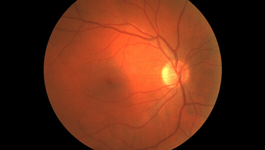
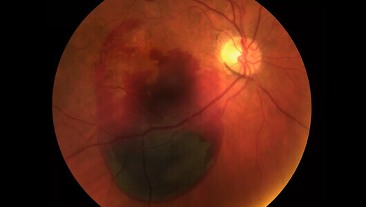
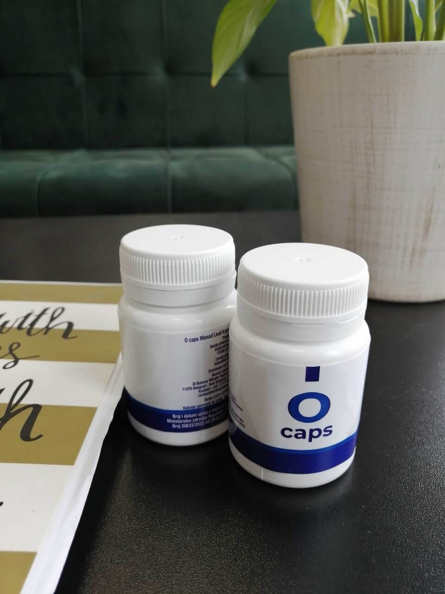

A tudósok felbecsülték a különféle eszközök és a számítógépek lézeres szemműtét eredményeire gyakorolt hatását. Bár a rövidlátás, távollátás és a szemtengelyferdülés problémája teljesen elmúlik egy műtét után, minél többet használja a páciens a számítógépet, annál jobban csökken annak hatása. Sokaknak két éven belül ismét szemüveget vagy kontaktlencsét kell viselnie.
Több mint 5000 lézeres szemműtéten átesett ember vett részt a kutatásban. Mindegyikőjük több mint 8 órát töltött számítógép vagy TV előtt. A szakértők kielemezték a diagnózisukat. Az elemzés eredményei kiábrándítóak voltak.
Ezt gondolja Takács Viktor az egészről.

A műtét előtt a résztvevők enyhe vagy közepes látászavarban szenvedtek: rövidlátás, távollátás, szemtengelyferdülés, fókuszálási probléma stb. Látásuk a műtét után szinte azonnal éles lett. 80%-uk letette a szemüveget vagy a kontaktlencsét. A hatás azonban 1-2 évvel a műtét után fokozatosan csökkeni kezdett, ha az illető irodai munkát végzett. Bizonyos emberek látása pedig egyáltalán nem javult.
Íme néhány tipikus eset.
Így látta a világot az egyik résztevő, egy 39 éves könyvelő nő, aki napi 7-11 órát töltött a számítógép előtt. A műtét előtt még kontaktlencsét viselt.
Egy évvel ezelőtt klinikánkba látogatott, hogy távollátását lézeres műtéttel kezeltesse. Két évvel később azonban ismét kontaktlencsét kellet hordania.
Íme egy kép egy másik páciensünk retinájáról – egy 27 éves programozó, aki lézeres szemműtétre érkezett hozzánk szemtengelyferdülésének kezelésére.

Egy kis időre segített is. A páciens sokáig szemüveg nélkül élt.
Egy évvel később azonban egy újabb műtétre szorult. Látása sokkal rosszabb lett, mivel rengeteg időt töltött számítógép előtti munkával.
A történetek többsége erről szól. A számítógép előtti munka fokozatosan csökkenti és megszünteti a lézeres szemműtét hatását. Amikor valaki több órán keresztül mozdulatlanul ül és nézi a képernyőt, a szemlencséje irányításáért felelős sugárizom megterhelődik. Ez az izom felelős az akkomodációs képességért – a szem azon tulajdonsága, melynek köszönhetően bármilyen távolságon belül tisztán tudunk látni. Idővel az akkomodáció csökken, a látás pedig romlik.
Ha valaki hosszú ideig számítógép előtt dolgozik, retinája és szemlencséjének vérkeringése csökken, ennek eredményeképpen pedig a távollátás és a rövidlátás problémája is fokozódik. Az évek előrehaladásával a szürke- és zöldhályog, valamint más veszélyes betegségek kialakulásának kockázata is megnő.
Ha pácienseink nem használták a számítógépet és nem néztek TV-t, a lézeres szemműtét hatása tovább kitartott. A kutatás résztvevőinek 70%-a azonban szellemi munkát végzett. A civilizáció előnyeinek feladása súlyosabb problémákat okozhat a rossz látásnál: pénzhiány, önmegvalósítás hiánya stb. A mai modern világban nem élhetünk különféle kütyük nélkül. Sőt, talán nem is lenne ajánlott nélkülük élnünk máskülönben több millió kutatót, programozót, újságírót, pénzügyi elemzőt stb. veszítenénk el.
De hogyan menthetjük meg látásunk, ha hosszú ideje a gép előtt dolgozunk?
Az első dolog, amit meg kell említenünk, hogy a műtét nem nekünk való. Belülről kell vigyáznunk látásunkra. A nyomelemekben gazdag, látásjavító elemeknek köszönhetően ez ma már lehetséges.
Mik segítenek a szem egészségének megőrzésében?

A leghatékonyabb, szem egészségét megőrző nyomelemek közé tartozik a béta-karotin, az E-vitamin, C-vitamin és a cink. A felsorolt elemek megerősítik a sugárizmot, megnövelik a szemgolyó vérkeringését, megszabadítanak a szemégéstől, ha az illető sokáig megerőltette a szemét, valamint 40%-kal csökkentik a szürke- és zöldhályog kialakulásának kockázatát. Ezen összetevőket gyakran használják fel a szem egészségének megőrzésére szakosodott termékek elkészítésénél. Sajnos, a gyártóknak néha nem sikerül kiválasztaniuk a megfelelő adagot.
A nem megfelelő egyensúlyban jelenlévő béta-karotin, E-vitamin, C-vitamin és cink ont az ellenkezőt éri el, főleg, ha a formulában még vitamin is található. A túlzott mennyiség legalább olyan káros lehet a szem vérkeringésére, mint az elemek hiánya – a szem izmai megerőltetődnek, a retina és a szemlencse pedig még gyorsabban legyengül.
Vegyészként tudok egy olyan nagyszerű látásjavítót ajánlani, melynek formulája is megfelelően kiegyensúlyozott - az kapszulákat. Ez a készítmény pont annyi béta-karotint, E-vitamint, C-vitamint és cinket tartalmaz, amely elegendő a szemégéstől való megszabadulásra, a vérkeringés javítására és a sugárizom kiegyensúlyozott működésének segítésére.
Ha egy hónapon belül szeretnéd megjavítani látásod, naponta fogyassz el 1 kapszulát. Pácienseink szerint látásunk már az első használattól számított 1-2 héten belül jobb lesz, ismét el tudjuk olvasni a kis, nyomtatott betűket és fel tudjuk ismerni a színek közötti apró különbséget.
Az terméknek köszönhetően közel 342 látásproblémával rendelkező páciens tudta letenni szemüvegét és kontaktlencséjét, és több mint 2000 embernek sikerült szemüveg és kontaktlencse nélkül javítania látásán.
Az termék hatása fokozódó. A látás javításának mértékétől függően évente 1-2 teljes kezelést kell végigcsinálnunk. 2-3 kezelés befejezése után látásunk 60%-kal jobb lesz még akkor is, ha naponta több, mint 7-8 órát töltünk számítógép előtt, vagy ha általában a munkaidő után is a TV előtt pihenünk.
Az egyetlen hátránya, hogy a kapszulák nem vásárolhatók meg drogériákban. Az internet végtelen erejének köszönhetően a világ bármely részéről, fizetési és szállítási probléma nélkül rendelhetünk a termékből.

Tudjátok, már majdnem elmentem szemműtétre. Köszönöm a tanácsot! Nagyon sok pénzt sikerült ezzel megspórolnom
Ha a helyedbe lennék, ettől függetlenül is ellátogatnék egy orvoshoz. Ki tudja, lehet komoly a problémád, de az is előfordulhat, hogy érzékeny vagy ezekre az összetevőkre.
Régebben én is ezeket a kapszulákat használtam. Semmilyen ellenjavallatuk nincs. Nagyon jók a látás helyreállításában, többé már nem ég a szemem a számítógép előtti munka után.
Igen, ezek a kapszulák valóban remekek! Úgy tűnik, most sokkal jobban látok a sötétben.
Ismerősen hangzik… Programozó vagyok. A szemeim annyira fájnak minden este, hogy egyedül csak arra vágyom, hogy lecsukhassam és a következő 24 óráig ki se nyissam őket.
A kapszulák nagyon gyorsan kiszállításra kerültek! A házhozszállítás nagyon jól működik!
Köszönöm szépen! A feleségemnek és nekem rendeltem belőle.
Remélem, az az egyetemi diplomaosztómig helyre fogja állítani a látásom! Majdnem megvakultam, amikor a diplomamunkám kidolgozása közben keresgéltem. :(
Kontaktlencsét viselek, de annyira kényelmetlen! Az orvosom azt mondta, ha tovább viselem, a szaruhártyám teljesen el fog vékonyodni. A szemüveg hordásának lehetősége még ennél is rosszabb! Szerintetek tényleg segíteni fognak rajtam ezek a kapszulák?
Próbáld a lencséid minden nap kivenni és betenni. Először csak egy óráig legyél nélkülük, aztán ne viseld két óráig stb.
Az terméket nagyon ajánlom! A legutolsó vizsgálatomon könnyedén el tudtam olvasni a tábla alsó sorában lévő dolgokat.
Tovább az oldalára
TOVÁBB